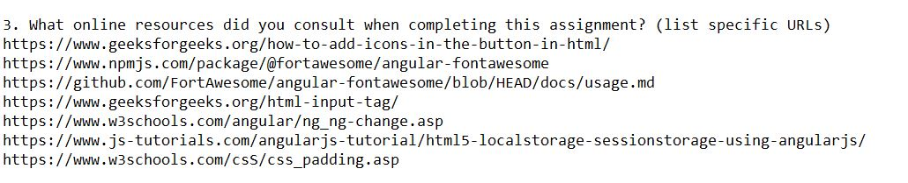

Myself | 23 Hours | Building an App for Class
Step 1: Implementation
Step 2: Design Problems
I designed the app for people who want to organize things by certain categories.
The app lets them block out categories they don't want to see. This app uses basic gestures (closed, pointing, open) to respectively control if primary, secondary, or both categories should appear on-screen, and is small enough for mobile users.
Clarity was solved through FontAwesome icons, which added some color to my application and also clarified what hand signals were used to do what.
I made myself the sole user of the app and decided to question myself for things. HandTracker signals were implemented based on how easy or intuitive I found it.
Storage was implemented using local storage, the simplest option. A problem was that I found it tough to use other databases, so I made it simple under a limited timespan.
Each step was completed in succession to fulfill the goals of the project: creating a functional and interesting app.
Step 3: Reflection
The result of this project was a positive score from my professor. I was pleased with my work.
If I had more time to spend on building this application, I would spend more time on the styling. It looks quite barebones although functional. I would also question actual end-users of the app instead of just myself.